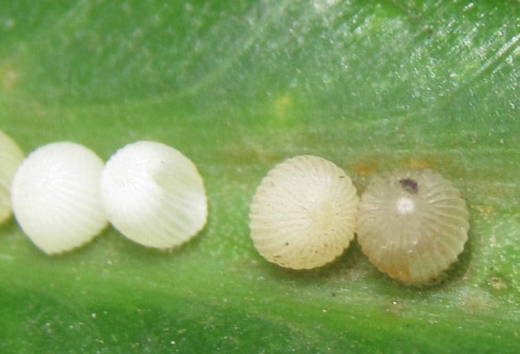
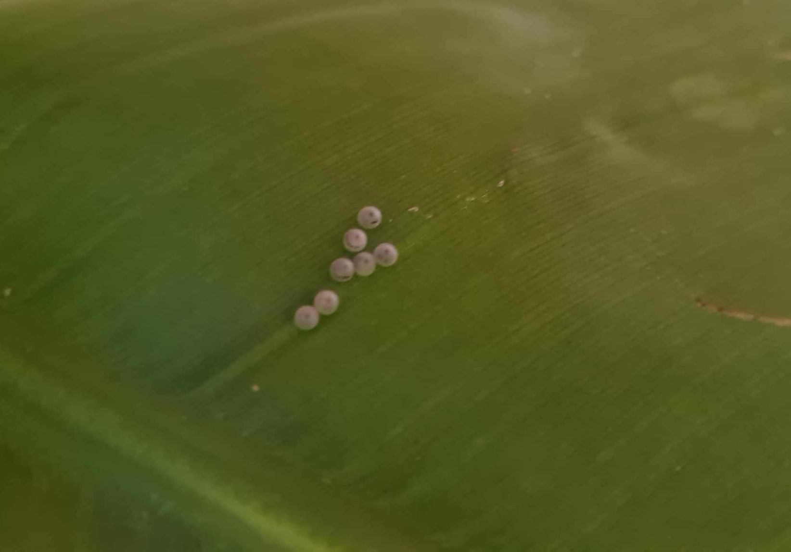
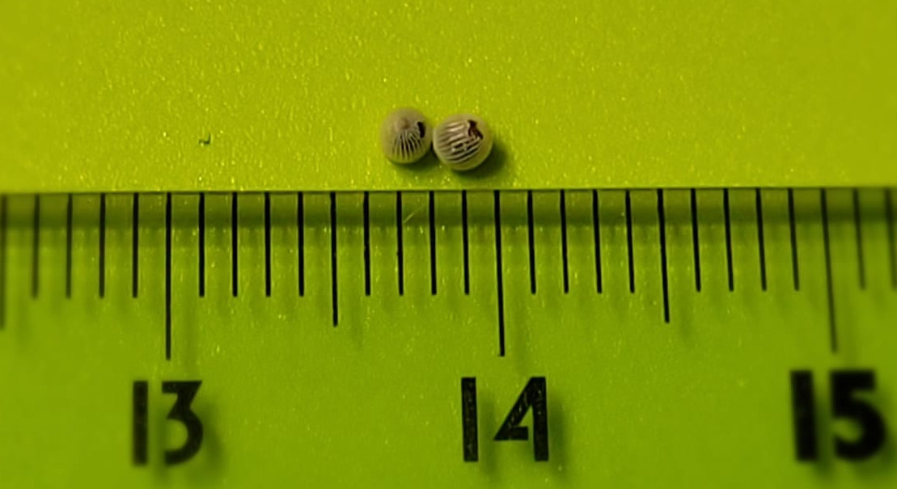

Jaja motyla Caligo Memnon składane są na roślinie żywicielskiej motyla, którą w przypadku tego gatunku jest paciorecznik (czyli kanna) lub bananowiec.
Jaja motyli


Jaja są okrągłe, około 1,5 mm średnicy, koloru białego. Po kilku dniach od złożenia po czarnej kropeczce można rozpoznać, czy jaja zostały zapłodnione.
